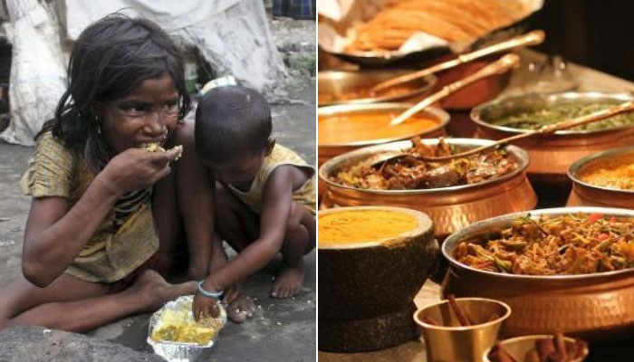

OUR PROJECT
अन्न - Schützen [Ann-Schützen] is a combination of the Hindi word "अन्न" meaning "food" and the German word "Schützen" that means "to protect".
As the name suggests, our team focuses on the protection of food resources from being wasted and thereby aims to achieve to fight world hunger.
Our project emphasises on the grave issue of food wastage on the global scale and tries to spread awareness to start at an individual level, as we all believe as the popular saying goes, "If everyone brooms their own doorsteps, the city would soon be clean."

What is it?
- We have created a website that presents data of global food wastage and the impacts that it puts on mankind.
- We have a quiz, as the part of our website, that focuses on assessing people's fooding (and wasting) habits and provides them with necessary guidance about future follow up of the same.
- We also have a tips and tricks page, that encourages utilisation of what's necessary and prevents misuse of excess food resources, along with promoting reuse and recyclability of resources.

Future scopes:-
- More data can be fed into the website to keep it updated on the food wastage trends.
- We also plan to connect people who are willing to donate excess food to the ones who are in need of it, in a voluntary manner.
- We can promote the functioning of the Robin Hood Army, involving volunteers to donate excess food from restaurants to the needy, who can't otherwise afford it.